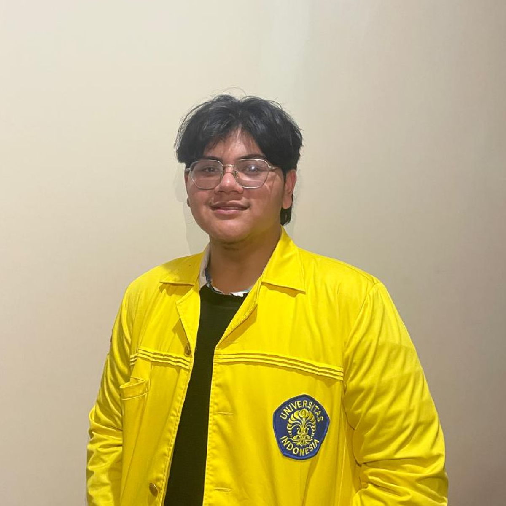
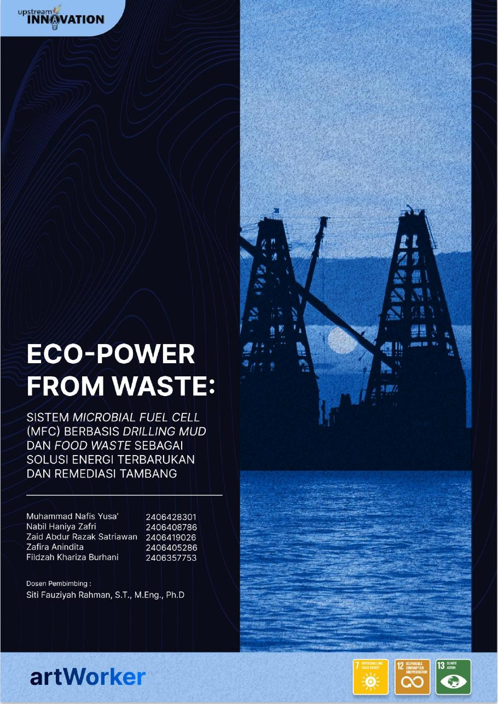

Energy systems
Exploring renewable generation, power conversion, storage, and the path from simulation to implementation.
SUSTAINABILITYElectrical engineering · Universitas Indonesia
I’m Nabil—an engineering student exploring robotics, sustainable energy, and systems that turn complex problems into practical impact.

What I’m building toward
I’m developing a multidisciplinary foundation across hardware, modeling, and sustainable systems.
Exploring renewable generation, power conversion, storage, and the path from simulation to implementation.
SUSTAINABILITYInterested in sensing, control, electronics, and intelligent machines built for useful real-world tasks.
INTELLIGENT SYSTEMSUsing analysis and simulation to test assumptions, understand tradeoffs, and shape better technical decisions.
MATLAB / SIMULINKSelected project
One project, shown with enough context to understand the problem, system, and contribution.

Team artWorker · Team member
A Microbial Fuel Cell system designed to generate low-power renewable electricity while treating drilling mud and food waste simultaneously.
Leadership & experience
Leading teams, evaluating organizations, and building technical initiatives across university and school communities.
Manage and supervise R&D staff while serving as an analyzer, evaluator, and internal consultant. Lead structured problem analysis and data-driven recommendations for organizational decisions.
Developing a technical foundation in electrical engineering with growing focus on electronics, robotics, sustainable energy, and system-level problem solving.
Led a student robotics team and coordinated technical development, collaboration, and preparation around robotics initiatives.
Managed technology projects, digital solutions, social media, and technology-based events while leading the organization’s IT section.
Coordinated the planning and delivery of Spirulinix 8.0 as project officer.
About me
Based in Indonesia · 00:00 WIBI’m an Electrical Engineering student at Universitas Indonesia. I like work that connects rigorous analysis with tangible value—especially in robotics, sustainable energy, and emerging technology.
My goal is simple: keep learning, build with intention, and contribute to projects that are useful beyond the presentation slide.
Have an idea, opportunity, or good question?